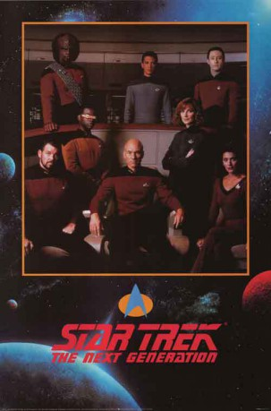

")
Alternativ: Raumschiff Enterprise: Das nächste Jahrhundert (Originaltitel)
 
 IMDB-Wertung: 8.6 / 10
IMDB-Wertung: 8.6 / 10  Metascore:
Metascore: 
Zwei Generationen später, nachdem Capt. Kirk, Spock, Dr. McCoy mit der Enterprise auf der Suche nach unbekannten Welten das Universum durchquert hatten, machte sich eine neue Mannschaft unter der Führung von Capt. Picard auf, in Galaxien vorzudringen, die nie ein Mensch zuvor gesehen hat. Man schreibt inzwischen Sternzeit 41242.6. Übermächtige Gegner und fremde Wesen verlangen immer wieder Capt. Picards Verhandlungsgeschick und die Tapferkeit der Besatzung der Enterprise ...
Jahr: 1987
Dauer: 91 Minuten
FSK:
Land: USA Studio: CBS Paramount Domestic TelevisionTonspuren: DD2.0 - ,
Untertitel: Deutsch, Englisch,
Auflösung: 720p (960x720) Größe: 4249 MB
Genre: Action, Sci-Fi, Abenteuer, Mystery, TV-Serie
Regisseur: Cliff Bole, Les Landau, Winrich Kolbe,  Rob Bowman, Robert Scheerer
Rob Bowman, Robert Scheerer
Drehbuch: Gene Roddenberry, Ronald D. Moore, Joe Menosky, Tracy Tormé, Brannon Braga
Soundtrack:
Darsteller:
 Patrick Stewart als Captain Jean-Luc Picard
Patrick Stewart als Captain Jean-Luc Picard Jonathan Frakes als Commander William T. Riker
Jonathan Frakes als Commander William T. Riker LeVar Burton als Lt. Commander Geordi La Forge
LeVar Burton als Lt. Commander Geordi La Forge Michael Dorn als Lieutenant Worf
Michael Dorn als Lieutenant Worf Marina Sirtis als Counselor Deanna Troi
Marina Sirtis als Counselor Deanna Troi Brent Spiner als Lt. Commander Data
Brent Spiner als Lt. Commander Data Gates McFadden als Dr. Beverly Crusher
Gates McFadden als Dr. Beverly Crusher Majel Barrett als Enterprise Computer
Majel Barrett als Enterprise Computer Wil Wheaton als Wesley Crusher
Wil Wheaton als Wesley Crusher Colm Meaney als Chief Miles O'Brien
Colm Meaney als Chief Miles O'Brien Denise Crosby als Lieutenant Tasha Yar
Denise Crosby als Lieutenant Tasha Yar Whoopi Goldberg als Guinan
Whoopi Goldberg als Guinan Michelle Forbes als Ensign Ro Laren
Michelle Forbes als Ensign Ro Laren Rosalind Chao als Keiko O'Brien
Rosalind Chao als Keiko O'Brien John de Lancie als Q
John de Lancie als Q Dwight Schultz als Barclay
Dwight Schultz als Barclay Carel Struycken als Mr. Homn
Carel Struycken als Mr. Homn April Grace als Transporter Technician Hubbell
April Grace als Transporter Technician Hubbell Armin Shimerman als Letek
Armin Shimerman als Letek Natalija Nogulich als Admiral Alynna Nechayev
Natalija Nogulich als Admiral Alynna Nechayev Lanei Chapman als Ensign Sariel Rager
Lanei Chapman als Ensign Sariel Rager Andreas Katsulas als Commander Tomalak
Andreas Katsulas als Commander Tomalak Marc Alaimo als Badar N'D'D
Marc Alaimo als Badar N'D'D Jerry Hardin als Samuel Clemens
Jerry Hardin als Samuel Clemens James Cromwell als Jaglom Shrek
James Cromwell als Jaglom Shrek Tony Todd als Kurn
Tony Todd als Kurn Clyde Kusatsu als Admiral Nakamura
Clyde Kusatsu als Admiral Nakamura Gwynyth Walsh als B'Etor
Gwynyth Walsh als B'Etor Carolyn McCormick als Minuet
Carolyn McCormick als Minuet Tracey Walter als Kayron
Tracey Walter als Kayron Jim Norton als Albert Einstein
Jim Norton als Albert Einstein Leonard Nimoy als Spock
Leonard Nimoy als Spock Ronny Cox als Captain Edward Jellico
Ronny Cox als Captain Edward Jellico Richard Lynch als Baran
Richard Lynch als BaranDatei: X:\HD-Serien\Star Trek - The Next Generation\S01\S01E01+E02 Der Mächtige+Mission Farpoint.mkv seit 03.02.2016
Festplatte: HD Serien(I-ST)
 Es gibt insgesamt 182 Filme in der Gruppe 'HD-Serien'
Es gibt insgesamt 182 Filme in der Gruppe 'HD-Serien'